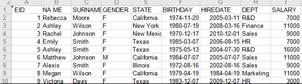

Description:
Retrieve contents of an Excel file and return them as a table sequence.
Syntax:
|
f.xlsimport() |
|
|
f.xlsimport(Fi,…;s,b:e;p) |
Retrieve rows from b to e from Excel file f and return them as a table sequence. "e<0" represents the reciprocal number, and "Fi,…" are the to-be-retrieved fields; by default, all fields will be retrieved. s is the name or sequence number of a sheet. |
Note:
The function retrieves all rows from Excel file f as records and returns them as a table sequence.
Parameters:
|
f |
An Excel file |
|
Fi |
To-be-retrieved fields; by default all fields will be retrieved.The sign # is used to represent a field with a sequence number |
|
s |
Name or sequence number of a sheet; if omitted, use the first Excel sheet |
|
b |
The starting row; if omitted, retrieve rows from row one to row e will; in this case, ":" can be omitted |
|
e |
The ending row; if omitted, retrieve rows from row b to the last row; in this case, ":" cannot be omitted; if e is greater than the actual number of rows, use the actual number of rows. If both b and e are omitted, retrieve rows from the first one to the last one |
|
p |
The password for opening the Excel file |
Options:
|
@t |
Export the first row in f as the field names; if not supplied, then use _1, and _2,… as field names; with parameter b supplied, row b is treated as the header ro |
|
@c |
Return result as a cursor; support xlsx format only; in this case, parameter e should be greater than 0 |
|
@b |
Remove blank rows before and after the Excel data when reading content in; it becomes invalid when @c option is also present |
|
@w |
Enable returning a sequence of sequences where members of sub-sequences are cell values; it cannot work with @t, @c and @b options |
|
@s |
Enable returning a string delimited by /tab |
|
@p |
Work with @w to return a sequence of sequences; each sub-sequence is made up of column values |
|
@n |
Remove blanck spaces on both sides of a string; read an empty string as null |
Return value:
A table sequence whose records are rows of an Excel file
Example:
|
|
A |
|
|
1 |
=file("D:\\EMPLOYEE1.xls").xlsimport() |
|
|
2 |
=file("D:\\EMPLOYEE2.xls").xlsimport@t() |
|
|
3 |
=file("D:\\EMPLOYEE1.xls").xlsimport(;"employee",3:6) |
Retrieve data from a sheet named “employee” by specifying a starting row and an ending row |
|
4 |
=file("D:\\EMPLOYEE2.xls").xlsimport@t(EID;"employee",3:6) |
Retrieve a specified field from the "employee" sheet, with the starting and ending rows defined and with the first row being the headers |
|
5 |
=file("D:\\EMPLOYEE2.xls").xlsimport@t(EID;"employee",:6) |
With b omitted, retrieve rows from the first one which is treated as the headers; here ":" cannot be omitted |
|
6 |
=file("D:\\EMPLOYEE2.xls").xlsimport(;"employee",490:) |
With e omitted, retrieve rows till the end, with row 490 treated as the headers; here ":" can be omitted |
|
7 |
=file("D:\\EMPLOYEE2.xls").xlsimport(;"employee",490:-5) |
Retrieve from the 490th row to the 5th row counted from the last |
|
8 |
=file("D:\\EMPLOYEE2.xls").xlsimport@t(EID;"employee") |
With both b and e omitted, retrieve all rows while making the first row the headers |
|
9 |
=file("D:\\EMPLOYEE4.xl").xlsimport() |
Retrieve the "EMPLOYEE4.xl" file in xls format |
|
10 |
=file("D:\\test.xlsx").xlsimport@c() |
Return result as a cursor |
|
11 |
=file("D:\\EMPLOYEE5.xls").xlsimport(#1,#2;2) |
There are several sheets in EMPLOYEE5.xls; import the first columns of data from the second sheet |
|
12 |
D:/excel/emp.xls |
Below is the content of emp.xls:
|
|
13 |
=file(A12).xlsimport@tb() |
Use @b option to remove blank rows before and after the data when reading it in
|
|
14 |
=file(A12).xlsimport@w() |
Return a sequence of sequences
|
|
15 |
=file(A12).xlsimport@w() |
Return a string delimited by /tab  |
|
16 |
=file(A12).xlsimport@wp() |
Use @wp options to return a sequecne of sequences whose members are column values
|


Related functions: